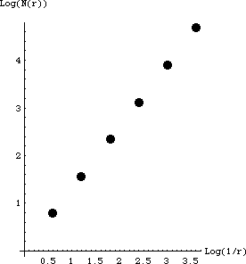

| 4(c) On the left is the completed table, on the right is the graph. |
| r | N(r) | 1/r | Log(1/r) | Log(N(r)) |
| .25 | 6 | 4 |
0.602 | 0.778 |
| .252 = .0625 | 36 | 16 |
1.204 | 1.556 |
| .253 = .0156 | 63 = 216 | 43 = 64 |
1.806 | 2.334 |
| .254 = .0039 | 64 = 1296 | 44 = 256 |
2.408 | 3.112 |
| .255 = .0010 | 65 = 7776 | 45 = 1024 |
3.010 | 3.891 |
| .256 = .0002 | 66 = 46656 | 46 = 4096 |
3.612 | 4.669 |
|
 |
| The points appear to fall along a straight line; the slope of this line is the box-counting dimension. We measure
dim = (4.669 - 0.778)/(3.612 - 0.602) = 1.293. |